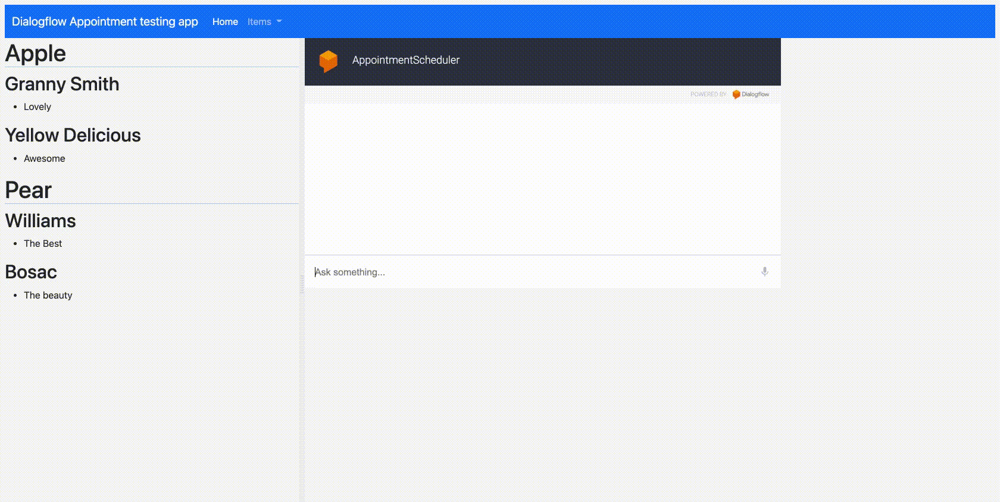
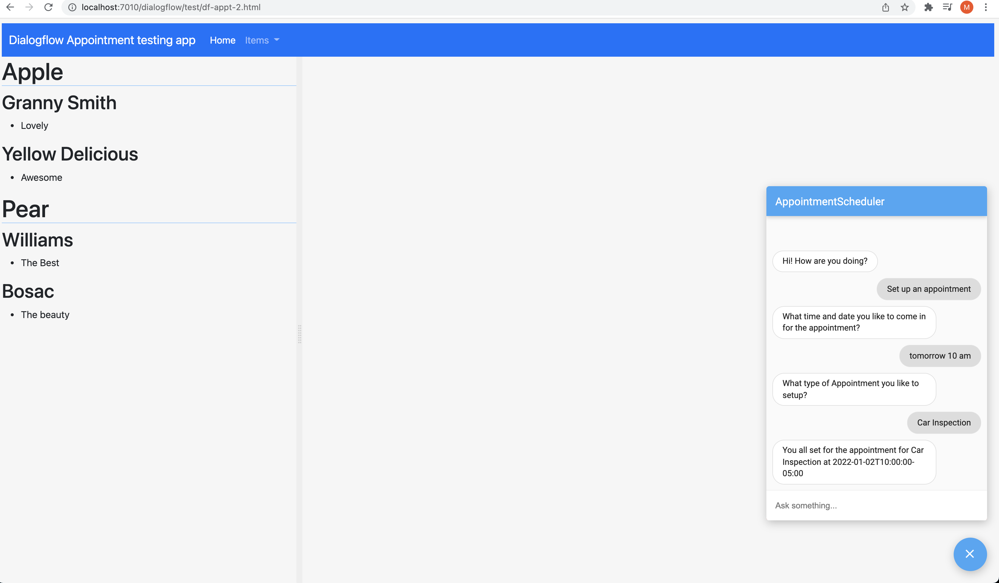
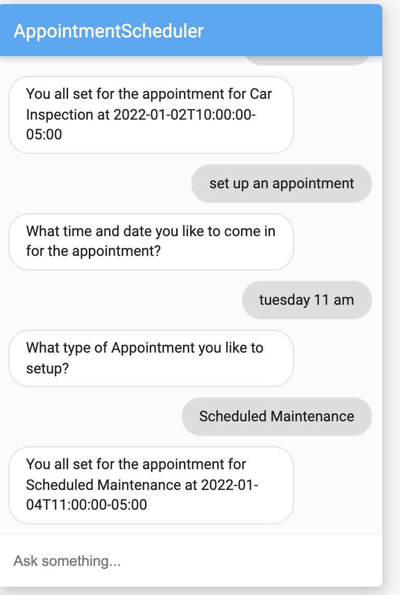
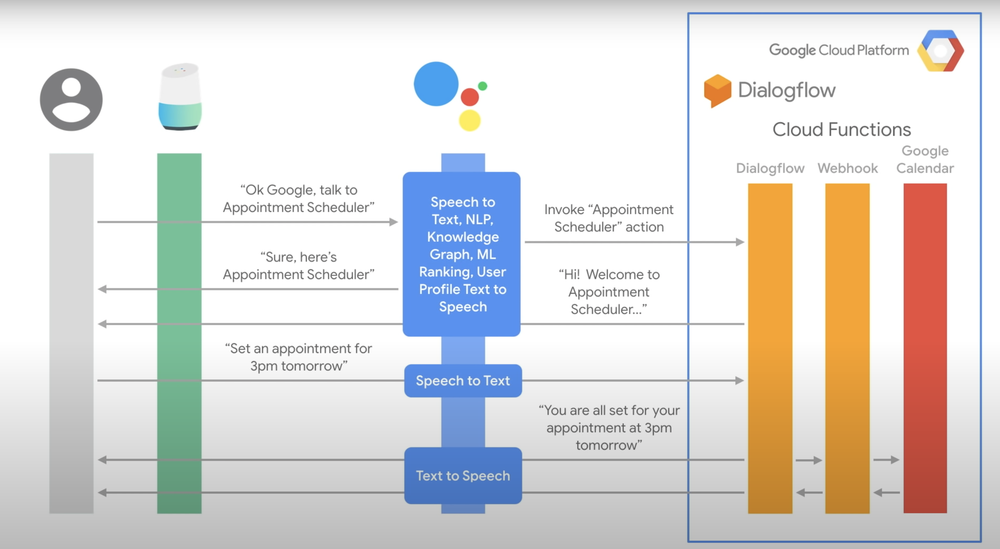
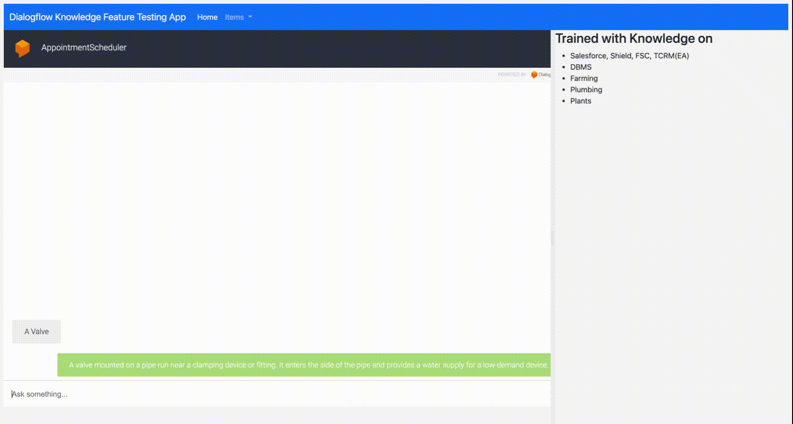
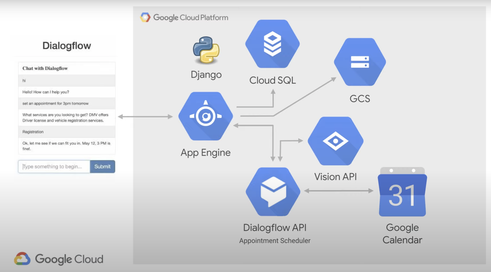
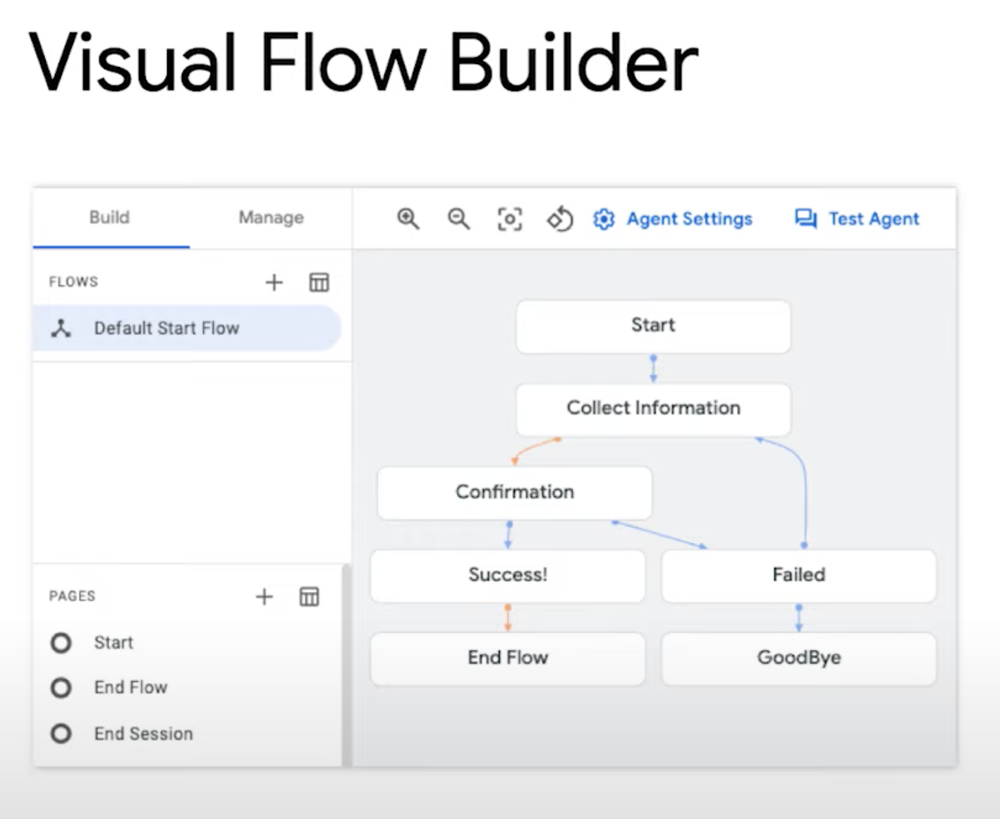

Dialogflow
Trying to teach a machine to have conversion is not easy!
User will ask same thing in a different ways!
| User Ask |
|---|
| What is the forecast tomorrow? |
| What is the weather tomorrow? |
| What is the weather tomorrow in Boston? |
Rule based systems to handle this not manageable! We need Natural Language Understanding (NLU)

- NLU works for both voice and text and with help of ML we can make chatbots really useful!


A natural language understanding (NLU) platform that makes it easy to design and integrate a conversational user interface into :
- mobile app
- web application
- device
- bot
- interactive voice response (IVR) system
Using Dialogflow, you can provide new and engaging ways for users to interact with your product.
-
Translate the Natural Language into machine readable data using ML models trained by the given set of examples.
-
It identifies about what the user is talking about, provides this data to the backend to take actions.
-
The backend performs the actions
Steps
-
Create an Agent (the chatbot application) within Dialogflow
- Collecting what the user is saying and mapping into an intent
- Taking an action on that intent
- Provide the user with the response
-
This all starts with a trigger event - Utterance
-
This is how the user invokes the chatbot
Hey Google, what is the temperature at NY City? - is an utterance
Hey Google - is a trigger

Hey Google, find the current stock of iPads from Inventory Management - is an utterance
find the current stock of iPads from Inventory Management is the invocation phase for the chatbot
Inventory Management is the invocation name
Key idea
- We need to understand: what is the user's intent?
User says: I want to set an appointment
set an appointment is the intent
User says: what are your hours of operation
hours of operation is the intent
- We provide Diagflow the different examples of user's intents
- Diagflow trains a ML model with many more similar phrases
- maps the user phrases into the right intent
- Diagflow trains a ML model with many more similar phrases
Intent Matching
| Training Phrase | Intent | Action and Parameters |
|---|---|---|
| I want to set an appointment | set an appointment | set_appointment() |
| what are your hours of operation | hours of operation | get_hoursOfOperation() |
- Parameters define variables we need to collect and store
Example
| User Phrase | Intent | Entities | Action and Parameters | Backend |
|---|---|---|---|---|
| I want to set an appointment at 10am tomorrow | set an appointment | 10am, tomorrow | set_appointment("10", "tomorrow) | Provide a dynamic response |
| Good Morning | greeting | greet() | Provide a static response: I am doing well |
Context
- is the method for the chatbot to store and access variables so it can exchange information from one intent to another in a conversation.
Dialogflow types of entities
Play with Dialogflow
-
Dialogflow creates GCP project to access logs and Cloud functions
-
Intents are mappings between a user's queries and actions fulfilled by your software.
User: good morning!
Bot: Hi! How are you doing?
User|Bot|Intent|Action|Sentiment| ---|---| good morning!|Hi! How are you doing?|Default Welcome Intent|input.welcome|Query Score: 0.9| weather in Boston now|Sorry, what was that?|Default Fallback Intent|input.unknown|Query Score: 0.1|
- Resource URL
https://dialogflow.googleapis.com/v2/projects/appointmentscheduler-kjsl/agent/sessions/bcef58f8-e2ad-0641-7655-06f1945f3713:detectIntent
- Request Payload
{
"queryInput": {
"text": {
"text": "good morning!",
"languageCode": "en"
}
},
"queryParams": {
"source": "DIALOGFLOW_CONSOLE",
"timeZone": "America/New_York",
"sentimentAnalysisRequestConfig": {
"analyzeQueryTextSentiment": true
}
}
}
- Response
{
"responseId": "0d8654f4-6b6e-4ac5-b99c-1054bcc653b3-e9fa6883",
"queryResult": {
"queryText": "good morning!",
"action": "input.welcome",
"parameters": {},
"allRequiredParamsPresent": true,
"fulfillmentText": "Hello! How can I help you?",
"fulfillmentMessages": [
{
"text": {
"text": [
"Hello! How can I help you?"
]
}
}
],
"intent": {
"name": "projects/appointmentscheduler-kjsl/agent/intents/ef927e0a-b805-4ada-9936-90aa79d710a5",
"displayName": "Default Welcome Intent"
},
"intentDetectionConfidence": 0.4507024,
"languageCode": "en",
"sentimentAnalysisResult": {
"queryTextSentiment": {
"score": 0.9,
"magnitude": 0.9
}
}
}
}
Response for "weather in Boston now"
{
"responseId": "1dbd8e9d-3440-40e6-9605-67e84e7b2b0c-e9fa6883",
"queryResult": {
"queryText": "weather in Boston now",
"action": "input.unknown",
"parameters": {},
"allRequiredParamsPresent": true,
"fulfillmentText": "Say that one more time?",
"fulfillmentMessages": [
{
"text": {
"text": [
"Say that one more time?"
]
}
}
],
"outputContexts": [
{
"name": "projects/appointmentscheduler-kjsl/agent/sessions/bcef58f8-e2ad-0641-7655-06f1945f3713/contexts/__system_counters__",
"lifespanCount": 1,
"parameters": {
"no-match": 2,
"no-input": 0
}
}
],
"intent": {
"name": "projects/appointmentscheduler-kjsl/agent/intents/40d635ef-6274-4141-b6b3-7971c6866f53",
"displayName": "Default Fallback Intent",
"isFallback": true
},
"intentDetectionConfidence": 1,
"languageCode": "en",
"sentimentAnalysisResult": {
"queryTextSentiment": {
"score": 0.1,
"magnitude": 0.1
}
}
}
}
Create Intent - Schedule Appointment
- Train the intent with what your users will say
- Provide examples of how users will express their intent in natural language.
- Adding numerous phrases with different variations and parameters will improve the accuracy of intent matching.
| Intent training phrase | Parameter Name | Entity | Resolved Value |
|---|---|---|---|
| set an appointment on Friday at 10 am | date-time | @sys.data-time | Friday at 10 am |
Response for
set an appointment on Tuesday at 9 am
{
"responseId": "676ca009-4f19-4e68-ac50-4f8db3c07fca-e9fa6883",
"queryResult": {
"queryText": "set an appointment on Tuesday at 9 am",
"parameters": {
"date-time": {
"date_time": "2022-01-04T09:00:00-05:00"
}
},
"allRequiredParamsPresent": true,
"fulfillmentText": "You all set for the appointment at 2022-01-04T09:00:00",
"fulfillmentMessages": [
{
"text": {
"text": [
"You all set for the appointment at 2022-01-04T09:00:00"
]
}
}
],
"intent": {
"name": "projects/appointmentscheduler-kjsl/agent/intents/95898256-556e-4e53-a7af-a595e9f8ff7f",
"displayName": "Schedule Appointment"
},
"intentDetectionConfidence": 1,
"languageCode": "en",
"sentimentAnalysisResult": {
"queryTextSentiment": {}
}
}
}
| User | Bot | Intent | Action | Sentiment | Comments |
|---|---|---|---|---|---|
| set an appointment on Tuesday at 9 am | You all set for the appointment at 2022-01-04T09:00:00 | Schedule Appointment | Not Available, Parameter:date-time, Value:{ "date_time": "2022-01-04T09:00:00-05:00" } | Query Score: 0.0 | |
| set an appointment | Not Available | Schedule Appointment | Not Available, Parameter:date-time, Value: | Query Score: 0.0 | missing date-time, requires slot filling |
Slot filling
- Make the entities as required
- Dialog flow will make sure it ask both date and time before it can respond back
| User | Bot | Intent | Action | Sentiment | Comments |
|---|---|---|---|---|---|
| set an appointment | What time and date you like to come in for the appointment? | Schedule Appointment | Not Available, Parameter:date-time, Value: | Query Score: 0.0 | missing date-time, requires slot filling prompt is asked |
| Monday 10 am | You all set for the appointment at 2022-01-03T10:00:00 | Schedule Appointment | Not Available, Parameter:date-time, Value:{ "date_time": "2022-01-04T09:00:00-05:00" } | Query Score: 0.0 | date-time is provided by the user |
Testing in our app
- Create a sample webapp using SFDX CLI
sfdx mohanc:app:webapp:gen -i /tmp/app.md -o df-appt.html \
-t 'Dialogflow Appointment testing app'
- Demo 
Dialog flow Integration with Dialogflow Messenger
<script src="https://www.gstatic.com/dialogflow-console/fast/messenger/bootstrap.js?v=1"></script>
<df-messenger
intent="WELCOME"
chat-title="AppointmentScheduler"
agent-id="d6e07c45-1523-4102-bf80-8fea7caf3caa"
language-code="en"
></df-messenger>
- Demo

Entities
- System
@sys.date
@sys.time
@sys.number
@sys.unit-currency
@sys.percentage
@sys.address
@sys.phone-number
@sys.email
@sys.color
- Developer
- Session
Adding Developer Entity
| Entity Name | Value | Synonyms |
|---|---|---|
| AppointmentType | Car Inspection | State Inspection, Vehicle Inspection |
| AppointmentType | Scheduled Maintenance | 6 months Maintenance, Yearly Maintenance |


- Demo - slot filling


- Session Entity
- Session ID
- Have the information collected from the user from the rest of the conversion
- Say, we can ask the user for the Vehicle Type and get Toyota Camry, this value will be kept in the rest of the conversion
Integration options
- One-click telephony BETA
- Dialogflow Phone Gateway BETA
- Avaya
- SignalWire
- Voximplant
- AudioCodes
- Twilio

-
Telephony
- Genesys
- Twilio
-
Text Based
- Web Demo
- Dialogflow Messenger BETA
- Messenger from Facebook
- Workplace from Facebook BETA
- Slack
- Telegram
- LINE
Fulfillment - Integration with Google Calendar
| Intent | Fulfillment | Comments |
|---|---|---|
| Intent-1 | BizLogic-1 | |
| Intent-2 | BizLogic-2 |

- webhook into Google Calendar
The web service (in our case Google Calendar) will receive a POST request from Dialogflow in the form of the response to a user query matched by intents with webhook enabled.
{
"type": "service_account",
"project_id": "projectid",
"private_key_id": "sk id here",
"private_key": "sk here",
"client_email": "appointmentscheduler-kjsl@appspot.gserviceaccount.com",
"client_id": "102792484459978676466",
"auth_uri": "https://accounts.google.com/o/oauth2/auth",
"token_uri": "https://oauth2.googleapis.com/token",
"auth_provider_x509_cert_url": "https://www.googleapis.com/oauth2/v1/certs",
"client_x509_cert_url": "https://www.googleapis.com/robot/v1/metadata/x509/xyz-kjsl%40appspot.gserviceaccount.com"
}
{
"name": "dialogflowFirebaseFulfillment",
"description": "This is the default fulfillment for a Dialogflow agents using Cloud Functions for Firebase",
"version": "0.0.1",
"private": true,
"license": "Apache Version 2.0",
"author": "Google Inc.",
"engines": {
"node": "10"
},
"scripts": {
"start": "firebase serve --only functions:dialogflowFirebaseFulfillment",
"deploy": "firebase deploy --only functions:dialogflowFirebaseFulfillment"
},
"dependencies": {
"actions-on-google": "^2.2.0",
"firebase-admin": "^5.13.1",
"firebase-functions": "^2.0.2",
"dialogflow": "^0.6.0",
"dialogflow-fulfillment": "^0.5.0"
}
}
/**
* Copyright 2017 Google Inc. All Rights Reserved.
*
* Licensed under the Apache License, Version 2.0 (the "License");
* you may not use this file except in compliance with the License.
* You may obtain a copy of the License at
*
* http://www.apache.org/licenses/LICENSE-2.0
*
* Unless required by applicable law or agreed to in writing, software
* distributed under the License is distributed on an "AS IS" BASIS,
* WITHOUT WARRANTIES OR CONDITIONS OF ANY KIND, either express or implied.
* See the License for the specific language governing permissions and
* limitations under the License.
*/
'use strict';
const functions = require('firebase-functions');
const {google} = require('googleapis');
const {WebhookClient} = require('dialogflow-fulfillment');
// Enter your calendar ID below and service account JSON below
const calendarId = "xyx@group.calendar.google.com";
const serviceAccount = "xyx-kjsl@appspot.gserviceaccount.com"; // Starts with {"type": "service_account",...
// Set up Google Calendar Service account credentials
const serviceAccountAuth = new google.auth.JWT({
email: serviceAccount.client_email,
key: serviceAccount.private_key,
scopes: 'https://www.googleapis.com/auth/calendar'
});
const calendar = google.calendar('v3');
process.env.DEBUG = 'dialogflow:*'; // enables lib debugging statements
const timeZone = 'America/New_York';
const timeZoneOffset = '-05:00';
exports.dialogflowFirebaseFulfillment = functions.https.onRequest((request, response) => {
const agent = new WebhookClient({ request, response });
console.log("Parameters", agent.parameters);
const appointment_type = agent.parameters.AppointmentType
function makeAppointment (agent) {
// Calculate appointment start and end datetimes (end = +1hr from start)
//console.log("Parameters", agent.parameters.date);
const dateTimeStart = new Date(Date.parse(agent.parameters.date.split('T')[0] + 'T' + agent.parameters.time.split('T')[1].split('-')[0] + timeZoneOffset));
const dateTimeEnd = new Date(new Date(dateTimeStart).setHours(dateTimeStart.getHours() + 1));
const appointmentTimeString = dateTimeStart.toLocaleString(
'en-US',
{ month: 'long', day: 'numeric', hour: 'numeric', timeZone: timeZone }
);
// Check the availibility of the time, and make an appointment if there is time on the calendar
return createCalendarEvent(dateTimeStart, dateTimeEnd, appointment_type).then(() => {
agent.add(`Ok, let me see if we can fit you in. ${appointmentTimeString} is fine!.`);
}).catch(() => {
agent.add(`I'm sorry, there are no slots available for ${appointmentTimeString}.`);
});
}
let intentMap = new Map();
intentMap.set('Schedule Appointment', makeAppointment);
agent.handleRequest(intentMap);
});
function createCalendarEvent (dateTimeStart, dateTimeEnd, appointment_type) {
return new Promise((resolve, reject) => {
calendar.events.list({
auth: serviceAccountAuth, // List events for time period
calendarId: calendarId,
timeMin: dateTimeStart.toISOString(),
timeMax: dateTimeEnd.toISOString()
}, (err, calendarResponse) => {
// Check if there is a event already on the Calendar
if (err || calendarResponse.data.items.length > 0) {
reject(err || new Error('Requested time conflicts with another appointment'));
} else {
// Create event for the requested time period
calendar.events.insert({ auth: serviceAccountAuth,
calendarId: calendarId,
resource: {summary: appointment_type +' Appointment', description: appointment_type,
start: {dateTime: dateTimeStart},
end: {dateTime: dateTimeEnd}}
}, (err, event) => {
err ? reject(err) : resolve(event);
}
);
}
});
});
}
Dialogflow Integration with Google Assistant Actions
- Actions in Google
- Way to extend the functionality of Google Assistant
- We can reach 500 million devices that support Google Assistant
- Smart speakers
- Phones
- Cars
- TVs
- Watches
Knowledge Base Support in Dialogflow chatbots

- Demo 
Django frontend

Integration with Google Cloud ML

Dialogflow (CX](https://dialogflow.cloud.google.com/cx/projects)


References
Videos
- What is Dialog flow
- Intents, Prompts, Appointment Builder